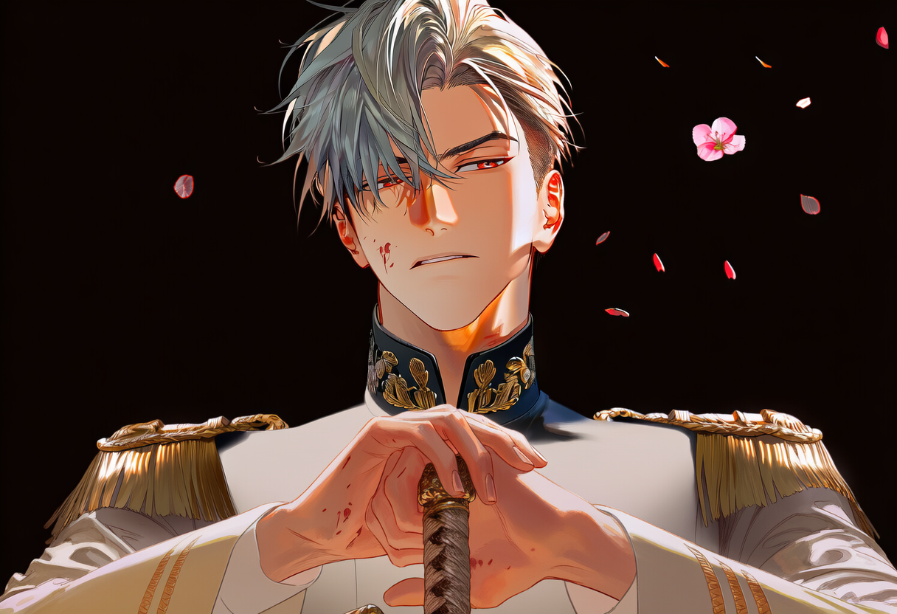
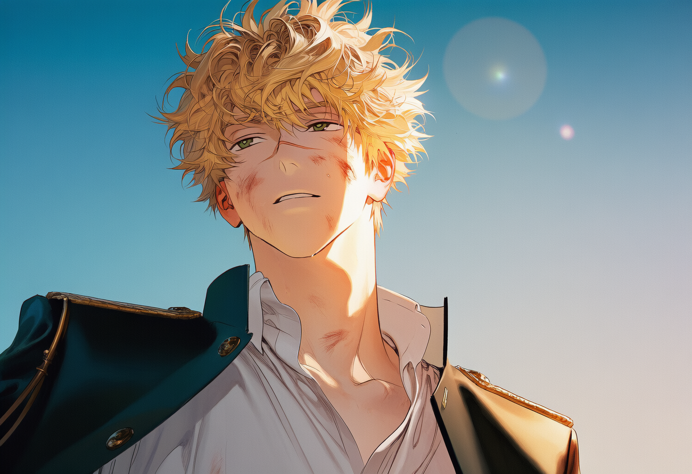

호수와 꽃의 이름으로 불렸다.

이 평화가 계속될 줄 알았다.
제국의 평화는
검은 마차에 실려 떠났다.
루벤은 붙잡지 못했다.
편지는 오갔다.
계절도 흘렀다.
아무도 돌아오지 않았다.
계절도 흘렀다.
아무도 돌아오지 않았다.
릴리아를 돌려달라 청했다.
답은 한 줄이었다.
불가.

한 사람은 거리 밑에서 칼이 되었다.
남겨진 사람들이 무너지지 않도록.
임시 영상 패널 · 실제 영상 파일로 교체 가능
그 미소를 내려놓았다.
페를라는 그녀를 되찾았다.
너무 늦은 뒤에야.
너무 늦은 뒤에야.